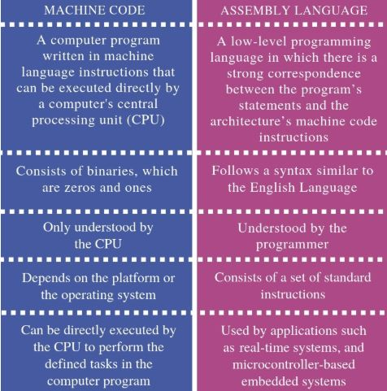
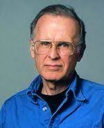
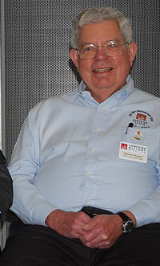
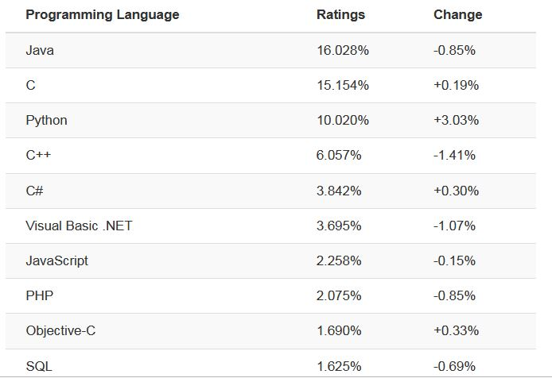

History of Programming Languages
by Khodor Pavel
The history of programming languages spans from documentation of early mechanical computers to modern tools for software development.
Programming languages are usually divided into five generations.
- Machine code
- Assembly
- High level language
- Structural programming
- OOP
Machine code
Machine code is a computer program written in machine language. It uses the instruction set of a particular computer architecture. It is usually written in binary. Machine code is the lowest level of software.


Disadvantages
- It is very difficult to program in machine language. The programmer has to know details of hardware to write program.
- The programmer has to remember a lot of codes to write a program which results in program errors.
- It is difficult to debug the program.
- Very long programs.
Assembly language
Assembly is any low-level programming language in which there is a very strong correspondence between the instructions in the language and the architecture's machine code instructions

Machine code vs Assembly language
High-level programming languages
Since the mid 50's. of XX century the first high-level programming languages appeared. These languages were not tied to a particular type of computer. Each of them has its own compilers.
Advantages of High level language
- High level languages are programmer friendly. They are easy to write, debug and maintain.
- It provide higher level of abstraction from machine languages.
- It is machine independent language.
- Easy to learn.
- Less error prone, easy to find and debug errors.
- High level programming results in better programming productivity.
Fortran programming language
The first high-level language Fortran was created between 1954 and 1957 by a group of programmers led by John Backus at IBM. It was intended for scientific and technical calculations. Fortan is still in use today.
LISP programming language
John McCarthy developed Lisp in 1958 while he was at the Massachusetts Institute of Technology. Linked lists are one of Lisp's major data structures, and Lisp source code is made of lists.
Lisp pioneered many ideas in
- computer science
- tree data structures
- automatic storage management
- dynamic typing
- conditionals
- higher-order functions
- recursion
Lisp 1960
- List/symbolic processing
- Initially (and often still) interpreted
- Dozens (most likely hundreds) of dialects
- “Lisp has an implied plural”
- Common Lisp
- Scheme
- This family of languages has been (and is) the mainstay of artificial intelligence (AI) research
- Though delivered products have often been in C or C++
Church–Turing thesis
In computability theory, the Church–Turing thesis is a hypothesis about the nature of computable functions.
It states that a function on the natural numbers can be calculated by an effective method if and only if it is computable by a Turing machine.
Formalize the notion of computability:
- In 1933, Kurt Gödel, with Jacques Herbrand, created a formal definition of a class called general recursive functions
- In 1936, Alonzo Church created a method for defining functions called the λ-calculus.
- Alan Turing created a theoretical model for machines, now called Turing machines, that could carry out calculations from inputs by manipulating symbols on a tape.
Church and Turing proved that these three formally defined classes of computable functions coincide: a function is λ-computable if and only if it is Turing computable, and if and only if it is general recursive.
C programming language

C was originally developed at Bell Labs by Dennis Ritchie between 1972 and 1973 to make utilities running on Unix.During the 1980s, C gradually gained popularity. It has become one of the most widely used programming languages.
C - 1978
C - high-level programming language for systems programming
- Very widely used, weakly checked, systems programming language
- Associated with Unix and through that with Linux and the open source movement
- Performance becomes somewhat portable
- Designed and implemented by Dennis Ritchie 1974-78
C++ programming language
C++ is a general-purpose programming language created by Bjarne Stroustrup as an extension of the C programming language, or "C with Classes". The language has expanded significantly over time, and modern C++ has object-oriented, generic, and functional features in addition to facilities for low-level memory manipulation.
C++ – 1985
C++ is a general-purpose programming language with a bias towards systems programming that
- is a better C
- supports data abstraction
- supports object-oriented programming
- supports generic programming
C# programming language

C# was designed by Anders Hejlsberg
It was developed around 2000 by Microsoft as part of its .NET initiative, and later approved as an international standard by Ecma (ECMA-334) and ISO.
C# - 2000
C# is a general-purpose, multi-paradigm programming language encompassing
- strong typing
- lexically scoped
- imperative
- declarative
- functional
- generic
- object-oriented (class-based)
Java programming language
Java is a strongly typed object-oriented programming language developed by Sun Microsystems.
The official release date is May 23, 1995. For 2019, Java is one of the most popular programming languages.
There were five primary goals in the creation of the Java language:
- It must be simple, object-oriented, and familiar.
- It must be robust and secure.
- It must be architecture-neutral and portable.
- It must execute with high performance.
- It must be interpreted, threaded, and dynamic.
JavaScript programming language

JavaScript was created by Brendan Eich in 1995 during his time at Netscape Communications. It was inspired by Java, Scheme and Self.JavaScript often abbreviated as JS, is a high-level, just-in-time compiled, object-oriented programming language that conforms to the ECMAScript specification.
JavaScript Features

Most Popular Programming Languages
Fastest-Growing Languages
Every year, the Tiobe Index crowns the fastest growing language as “Language of the Year”. Recent winners have been Python (2018), C (2017), Go (2016), Java (2015), and JavaScript (2014).
2020 Programming Language Predictions
Based on trends from previous years, analysts are confident that the list of top programming languages won’t change that much from year-to-year.